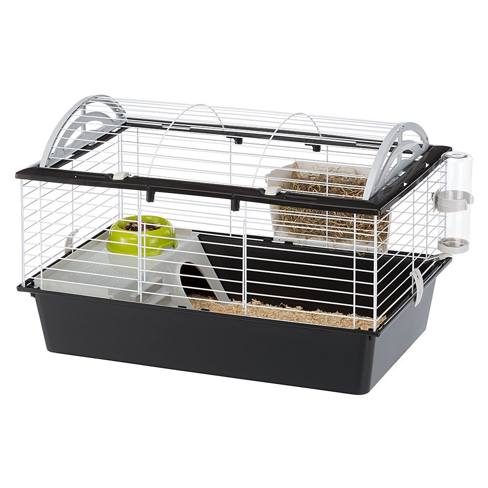

Welcome to gyvūnėlių parduotuvė
ZooKaralyste.lt - naminių gyvūnėlių parduotuvė
2020.10.29 11:04Puslapis naudojasi cookie failais įgyvendinti paslaugas sutampačias su Cookies Failų Politika . Galite nurodyti saugojimo arba prieigos sąlygas Cookies Failams Jūsų naryšyklėje. email shop@zookaralyste.lt Tel. +37 060 59 39 55 Registracija Prisijunkite Krepšelis: (tuščias) prie kasos suma: 0,00 €
Katės
Kačių maistas
Kasdieninis kačių maistas
Sausas ėdalas katėms
Šlapias maistas katėms
Veterinarinis maistas katėms
Sausas ėdalas katėms
Nutukimas, antsvoris
Virškinimo sistema
Dermatologinės problemos
Endokrininiai sutrikimai
Senatvės problemos
Dantų problemos
Rekonvalescencija
Šlapimo takų ligos
Inkstų ligos
Sąnarių ligos
Alergijos
Kepenų ligos
Nėščios, maitinančios, kačiukai
Sterilizuoti
Diabetas / Cukraligė
Streso terapija
Šlapias maistas katėms
Nutukimas, antsvoris
Virškinimo sistema
Dermatologinės problemos
Endokrininiai sutrikimai
Senatvės problemos
Dantų problemos
Rekonvalescencija
Šlapimo takų ligos
Inkstų ligos
Sąnarių ligos
Alergijos
Kepenų ligos
Nėščios, maitinančios, kačiukai
Sterilizuoti
Diabetas / Cukraligė
Streso terapija
Veislinių gyvūnų maistas
Norvegijos miško katė
Persų katė
Ragdoll katė
Siamo katė
Sfinksas katė
Bengalijos katė
Britų trumpaplaukė katė
Meino meškėnų katė
Suskirstymas pagal įmones
JosiCat
Carnilove
Alpha Spirit
Kitekat
Bozita
Hill s
Trovet
Brit
Iams
Versele-Laga
Butcher s
Iams
Whiskas
Certech
Josera
Nature’s Protection
Dolina Noteci
Nutrilove
Royal Canin
Essential Foods
Empire
Opti Meal
Acana
Taste of the Wild
Trainer
Eukanuba
Perfect Fit
Animonda
Farmina
Purina Cat Chow
Applaws
Felix
Purina Veterinary Diets
Arion
Fitmin
Purina Pro Plan
Bosch
Gourmet
Sheba
Suskirstymas pagal gyvenimo etapą
Ėdalas suaugusiai katei
Maistas kačiukams
Ėdalas vyresniai katei
Ėdalas jaunai katei
Kačių pašaras plaukų kamuoliukų kontrolei
Skanėstai katėms
Pašaras katems be grūdų
Dubenėlis katės maistui
Žaislai katėms
Kiti
Meškerės
Kamuoliukai
Pelytės
Kosmetika ir priežiūra
Atbaidančios medžiagos
Kvepalai
Žirklės, karpikliai
Šampūnai, kondicionieriai
Šepečiai, šukos
Pasivaikščioti
Automatiniai juostiniai pavadėliai
Automatiniai virviniai pavadėliai
Antkakliai
Kačių maistiniai maišeliai
ID pakabukas katei
Petnešos
Antkakliai, petnešos
Paprasti pavadėliai
Priedai katėms
Dubenėliai, stovai, dalytuvai
Šepečiai, šukos
Guoliai, patiesimai
Transporteriai, krepšiai
Draskyklės
Durelės, rampos
Kiti
Įspėjamasis ženklas katė
Katžolė
Sveikata
Akių ir ausų priežiūra
Akių lašai katei
Ausų lašai katei
Burnos higiena
Dantų pasta katėms
Dantų šepetėlis katėms
Vitaminai, papildai
Skirstymas pagal vitaminų paskirtį
Vitaminai kačių akims
Vitaminai kačių skrandžiui ir virškinimui
Vitaminai kačių dantims
Vitaminai kačių apytakai
Vitaminai kačių inkstams
Vitaminai kačių šlapimo takams
Vitaminai kačių nervų sistemai
Vitaminai kačių kepenims
Vitaminai kačių kaulams ir sąnariams
Vitaminai kačių virškinimo traktui
Vitaminai kačių odai ir kailiui
Vitaminai katėms palaikantys imunitetą
Vitaminai kačių širdžiai
Blusom ir erkėm
Pincetai
Apykaklės nuo blusų ir erkių katėms
Lašai nuo blusų ir erkių katėms
Purškalai nuo blusų ir erkių katėms
Dermatologija ir priežiūra
Nuraminimui
Letenos
Nuo kirmelių
Švara
Kraikas
Bentonitinis
Nedrumzlinas
Natūralus
Aromatizuotas
Drumzlinas
Natūralūs
Aromatizuotas
Medžio drožlių
Nedrumzlinas
Natūralus
Aromatizuotas
Drumzlinas
Natūralus
Aromatizuotas
Sepiolitinis
Nedrumzlinas
Natūralus
Aromatizuoti
Drumzlinas
Natūralus
Aromatizuoti
Silikagelio (silicio dioksidinis)
Nedrumzlinas
Natūralus
Kukurūzinis
Tofu
Hilton
JRS
Catsan
Benek
Cat Sand
Bazyl
MyKitty
Kiuvetės, tualetai ir semtuvai
Kilimėliai po kiuvėtemis
Neuždengta katės kiuvetė
Uždengta katės kiuvetė
Pakratų semtuvai
Kvapo neutralizatoriai
Švaros mokslas
Šunys
Šunų maistas
Suskirstymas pagal įmones
Nerogold
Wiejska Zagroda
dingo
Optimeal
Nutrilove
Eukanuba
AmiWet
Orijen
Essential Foods
Farmina
Hyalutidin
Pedigree
Trainer
Fitmin
AniMedica
Perfect Fit
Taste of the Wild
Friskies
Profine
John Dog
Hill s
Purina Dog Chow
JosiDog
Iams
Purina Pro Plan
JosiDog
Josera
Purina Veterinary Diets
Carnilove
Lincoln
Trovet
8 in 1
Nature s Protection
Versele-Laga
ABAKUS
Beyond
Bosch
Bozita
Brit
Butcher s
Royal Canin
Cesar
Acana
Chappi
Alpha Spirit
Dolina Noteci
Animonda
Applaws
Arion
Empire
Suskirstymas pagal gyvenimo etapą
Ėdalas vyresniam šuniui
Maistas šuniukui
Sausas ėdalas šuniukui
Šlapias ėdalas šuniukui
Ėdalas jaunam šuniui
Ėdalas suaugusiam šuniui
Skanėstai šunims
Pašaras šunims be grūdų
Šunų maisto konteineris
Kasdieninis maistas šunims
Sausas ėdalas šunims
Šlapias šunų maistas
Veterinarinis maistas šunims
Sausas šunų maistas
Streso terapija
Nėščios maitinančios šuniukai iki 2 mėnesių amžiaus
Dermatologinės problemos
Virškinimo sistema
Senatvės problemos
Rekonvalescencija
Dantų problemos
Šlapimo takų ligos
Smegenų sutrikimai
Inkstų ligos
Širdies ligos
Alergijos
Sąnarių ligos
Diabetas / Cukraligė
Kepenų ligos
Nutukimas Antsvoris
Šuniukai virš 2 mėnesių amžiaus
Šlapias šunų maistas
Nutukimas, Antsvoris
Virškinimo sistema
Dermatologinės problemos
Streso terapija
Senatvės problemos
Dantų problemos
Rekonvalescencija
Šlapimo takų ligos
Smegenų sutrikimai
Inkstų ligos
Alergijos
Širdies ligos
Nėščios maitinančios šuniukai iki 2 mėnesių amžiaus
Sąnarių ligos
Diabetas / Cukraligė
Kepenų ligos
Veislinių gyvūnų maistas
Kavalieriaus karaliaus Karolio spanielis
Cvergšnauceris
Čihuahua
Pudel
Kokerspanielis
Mopsas
Taksas
Rotveileris
Prancūzų buldogas
Shihtzu
Vokiečių aviganis
Vakarų Škotijos baltasis terjeras
Auksaspalvis retriveris
Jorkšyro terjeras
Vokiečių šuo
Beagle šuo
Džeko Raselo terjeras
Bokseris
Labradoro retriveris
Buldogas
Maltos bišonas
Šunų žaislai
Kiti
Kamuoliai
Kramtalai
lekštė šunims frisbee
Kosmetika ir priežiūra
Atbaidančios medžiagos
Kvepalai
Šampūnai kondicionieriai
Žirklės karpikliai
Kvapo neutralizatoriai
Švaros mokslas
Pasivaikščioti
Šiukšlių maišeliai/maišeliai išmatoms
Šunų maistiniai maišeliai
ID pakabukas šuniui
Antsnukiai apykaklės
Pakinktai pavadėliai antkakliai
Automatiniai virviniai pavadėliai
Petnešos
Antkakliai
Paprasti pavadėliai
Automatiniai juostiniai pavadėliai
Automatiniai virviniai pavadėliai
Sportas
Priedai šunims
Šepečiai šukos
Šunų šepetys
Šunų šukos
Furminatorius šunims
Transporteriai krepšiai
Durelės rampos
Kiti
Drabužiai
Būdos
Įspėjamasis ženklas šuo
Dubenėliai Stovai dalytuvai/dozatoriai
Metalinis dubenėlis šuniui
Dalytuvas šunims
Plastikinis dubenėlis šuniui
Keraminis šuns dubenėlis
Lėto valgymo dubenėlis
Sauskelnės kelnaitės
Guoliai patiesalai
Čiužiniai šuniui
Šunų pontonai
Guoiai dideliam šuniui
Guoliai mažam šuniui
Patiesalai šunims
Sveikata
Blusom ir erkėm
Pincetai
Apykaklės nuo blusų ir erkių šunims
Lašai nuo blusų ir erkių šunims
Purškalai nuo blusų ir erkių šunims
Nuraminimui
Dermatologija ir priežiūra
Letenos
Nuo kirmelių
Burnos higiena
Dantų šepetėlis šunims
Šunų burnos higienos preparatai
Akių ir ausų priežiūra
Akių lašai šuniui
Ausų lašai šunims
Vitaminai papildai
Skirstymas pagal vitaminų paskirtį
Vitaminai šunų akims
Vitaminai šunų skrandžiui ir virškinimui
Vitaminai šunų dantims
Vitaminai šunų apytakai
Vitaminai šunų inkstams
Vitaminai šunų šlapimo takams
Vitaminai šunų nervų sistemai
Vitaminai šunų kepenims
Vitaminai šunių kaulams ir sąnariams
Vitaminai šunų virškinimo traktui
Vitaminai šunų odai ir kailiui
Vitaminai šunims palaikantys imunitetą
Vitaminai šunų širdžiai
Švara
Kvapo neutralizatoriai
Kiuvetės
Šunims ir katėms
Graužikai
Priedai graužikams
Transporteriai
Nameliai, peryklos, narveliai
Dubenėliai, girdyklos
Tuneliai, kopėčios
Švara
Kraikas, žvyro kraikas ir smėlis
Priežiūra
Kiuvetės
Kvapo neutralizatoriai
Šampūnai, kondicionieriai
Pakinktai ir pavadėliai
Graužikų maistas
Pagrindinis
Ežiukams
Voverėms
Žiurkėnui
Naminei kuosai
Jūrų kiaulytei
Šeškui
Šinšiloms
Žiurkei
Pelei ir smiltpelei
Triušiui
Degu graužikui
Kubas mineralinis, kalkakmenis
Skanėstai, burbuolės
Paukščiai
Balandžiai
Kubas mineralinis, kalkakmenis
Skanėstai, burbuolės
Paukščių maistas
Pagrindinis
Nimfai
Banguotai papūgėlei
Zebroms
Egzotiniams paukščiams
Didelems papūgoms
Kanarėlei
Papūgoms
Paukščių priedai
Dubenėliai , girdyklos
Narvai
Sūpuoklės ir priedai
Švara
Smėlynas
Akvariumistika
Žuvų pašaras
Dumblių valgytojams
Krevetems
Tropinėms žuvims
Žuvims
Dugninėms žuvims
Mėsėdėms žuvims
Žolėdėms žuvims
Techniniai priedai
Vandens tyrimai
Substratai
Kiti
Apšvietimas
Valikliai
Tinklai
Termometrai
Akvariumo preparatai
Bakterijos ir biostarteriai
Vaistai žuvims
PH ir vandens kietumo korekcija
Vandens valymas
Preparatai dumbliams ir melsvadumbliams
Aeratoriai,filtrai
Vidiniai filtrai
Sterilizatoriai
Aeraciniai siurbliai
Filtro kasetės
Išoriniai filtrai
Vandens šildymas
Šildytuvai
Termometrai
Sodo baseinas ir tvenkinys
Maistas
Siurbliai
Filtrai
Akvariumai
Dekoracijos
Ropliai ir varliagyviai
Dekoracijos
Šildymas ir apšvietimas
Dienos šviesos lemputės
Naktinės lemputės
UVB apšvietimas
Kompaktinės liuminescencinės lempos
lemputės self-ballasted
Metalo halogeninės lempos
Lempos
Apšvietimas
Šildymo kilimėliai,
Šildantys akmenys
Keraminiai spinduoliai
Substratai
Vermikulito substratai
Kokoso substratai
Samanų substratai
Smėlio substratai
Durpių substratai
Kukurūzų substratai, Medienos substratai, Drožlių substratai
Pašaras ropliams ir varliagyviams
Driežų maistas
Maistas vandens vėžliams
Maistas gekonui
Varlių maistas
Maistas vėžliams
Krabų maistas
Chameleonų maistas
Terariumo įranga
Matavimo prietaisai
Kriokliai, garo generatoriai ir kondensatoriai
Termostatai ir laiko jungikliai
Purkštuvų sistemos
Slėptuves
Dubenėliai
Pincetai, semtuvėliai, kabliai
Terariumai ir aksesuarai
Priedai
Terariumai
Terariumų fonai
Filtrai
Nuolaidos
Esate: Pagrindinis puslapis NaujienlaiškisPateikite savo el.pašto adrėsą, kad gautumėte naujausią informaciją apie naujoves ir akcijas
Akcija ROYAL CANIN Indoor Appetite Control 400g 4,89 € 4,12 € ROYAL CANIN Dental Special Small Dog DSD 25 2kg 16,80 € 15,67 € ROYAL CANIN German Shepherd Adult 11kg + Royal Canin kibiras dovanų 46,51 € 42,16 € ROYAL CANIN Exigent 33 Aromatic Attraction 2kg + Royal Canin dovana 17,29 € 16,78 € ROYAL CANIN Light Weight Care 400g 3,85 € 2,96 € Perkamiausi BAYER Foresto Antkaklis šunims virš 8kg 35,99 € 31,99 € BAYER Foresto Antkaklis katėms ir šunims sveriantiems mažiau nei 8kg 31,99 € 26,99 € Dehinel Plus Flavour tabletės šunims 1 tab. 1,10 € BAYER Foresto Antkaklis šunims virš 8kg + Dehinel Plus Flavour 1 tab.nuo kirmėlių 33,00 € Silikoninis kraikas Long Feng 3,8 L įvairių kvapų 2,87 €Rekomenduojami produktai
BAYER Foresto Antkaklis šunims virš 8kg + Dehinel Plus Flavour 1 tab.nuo kirmėlių Gamintojas: Bayer Kaina: 33,00 € nurodo 21% PVM, be siuntos išlaidų Žiūrėti daugiau PETNER Maistas JUNIOR ALL BREEDS visų veislių jauniems šunims su kalakutiena 12kg +Kibiras dovanų! Gamintojas: Petner Kaina: 45,80 € nurodo 21% PVM, be siuntos išlaidų Žiūrėti daugiau PETNER maistas ADULT SMALL BREEDS suaugusiems mažų veislių šunims su kalakutiena 3kg Gamintojas: Petner Kaina: 12,50 € 13,90 € nurodo 21% PVM, be siuntos išlaidų Žiūrėti daugiau nuolaida ROYAL CANIN Yorkshire Terrier Adult 7,5kg Gamintojas: Royal Canin Kaina: 37,90 € nurodo 21% PVM, be siuntos išlaidų Žiūrėti daugiau PETNER maistas ADULT SMALL BREEDS suaugusiems mažų veislių šunims su ėriena 3kg Gamintojas: Petner Kaina: 14,90 € 16,30 € nurodo 21% PVM, be siuntos išlaidų Žiūrėti daugiau nuolaida ROYAL CANIN Hypoallergenic Small Dog HSD24 1kg Gamintojas: Royal Canin Kaina: 10,26 € nurodo 21% PVM, be siuntos išlaidų Žiūrėti daugiau PETNER Maistas JUNIOR ALL BREEDS visų veislų jauniems šunims su ėriena 3kg Gamintojas: Petner Kaina: 14,90 € 16,80 € nurodo 21% PVM, be siuntos išlaidų Žiūrėti daugiau nuolaida ROYAL CANIN Satiety Weight Management 410g skardinė Gamintojas: Royal Canin Kaina: 3,50 € nurodo 21% PVM, be siuntos išlaidų Žiūrėti daugiau Zolux Trigubo skonio, patentuotos kramtomos lazdelės 70g Gamintojas: ZOLUX Kaina: 4,19 € nurodo 21% PVM, be siuntos išlaidų Žiūrėti daugiau ROYAL CANIN Anallergenic AN18 3kg Gamintojas: Royal Canin Kaina: 27,05 € nurodo 21% PVM, be siuntos išlaidų Žiūrėti daugiau ROYAL CANIN Urinary S/O LP34 1,5kg Gamintojas: Royal Canin Kaina: 14,29 € nurodo 21% PVM, be siuntos išlaidų Žiūrėti daugiau 1 | 2 | 3 | 4 | 5 | 6 Mokėjimai ir pristatymas Laikas ir pristatymo kaina Informacija Privatumo politika ir slapukų politika Lojalumo programos nuostatai Kontaktai ir įmonės duomenys Apie mus Padėti Skundai Internetinės parduotuvės taisyklės Produktai taškams (tik prisijungusiems vartotojams) į viršų Parduotuvė yra peržiūrima Žiūrėti pilną puslapio versiją Sklep internetowy Shoper.pl